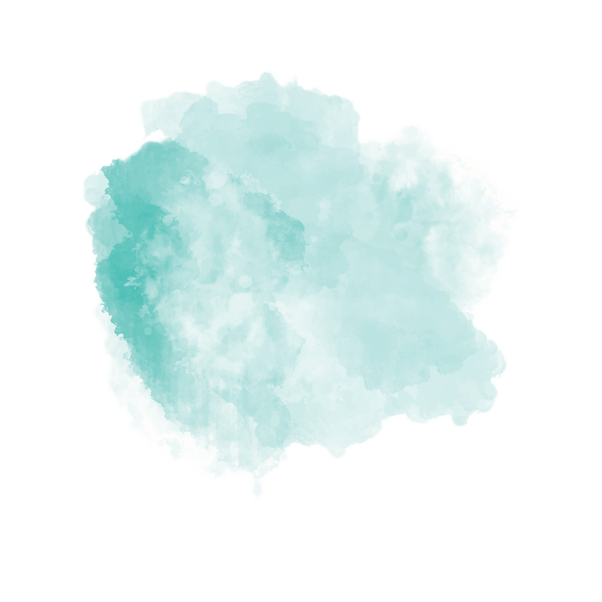
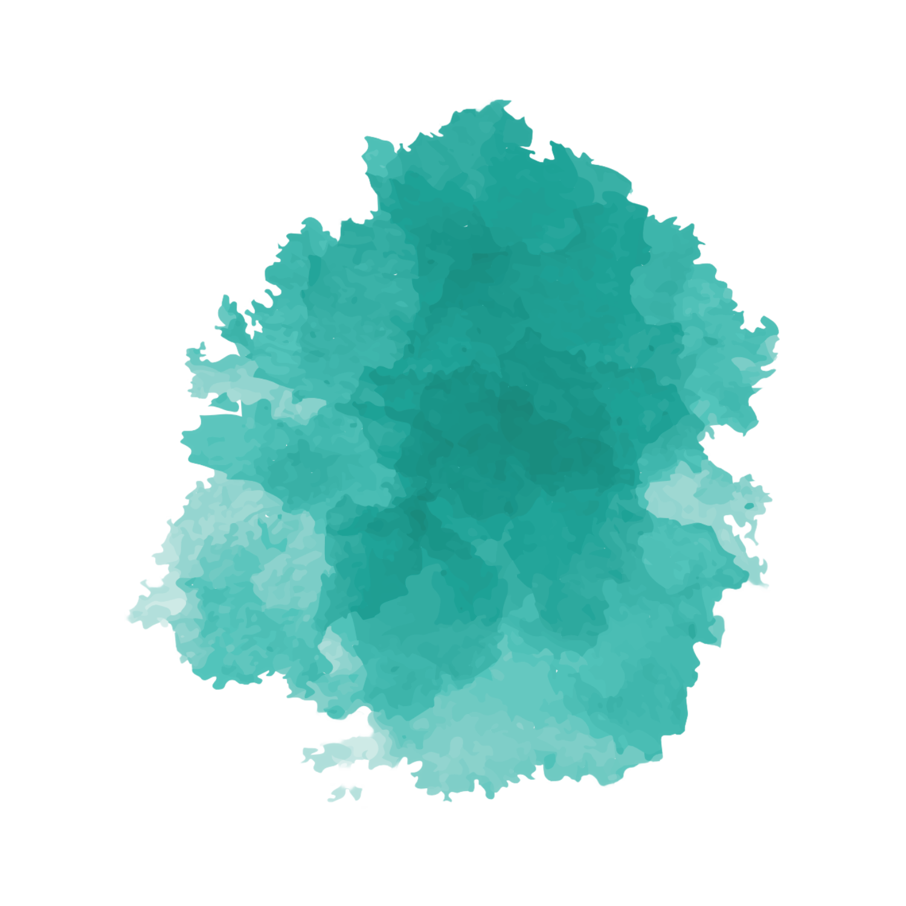
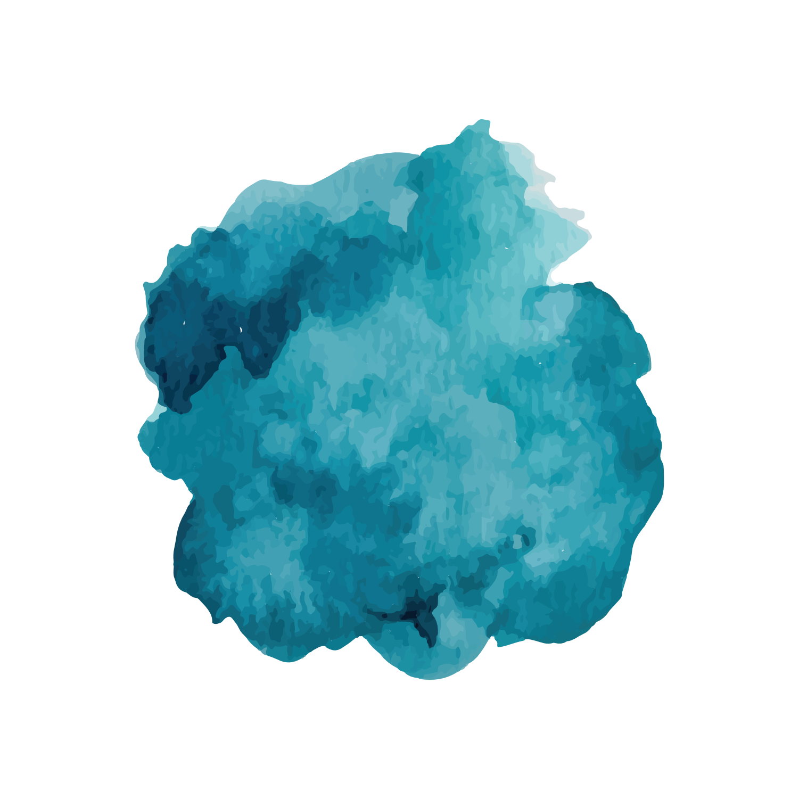
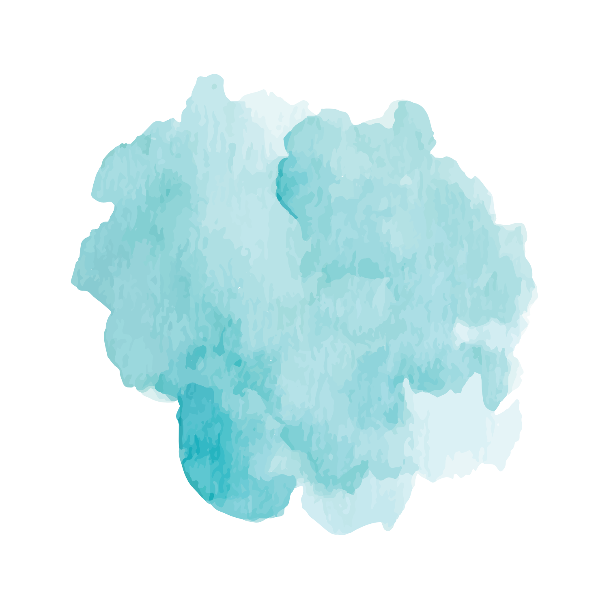
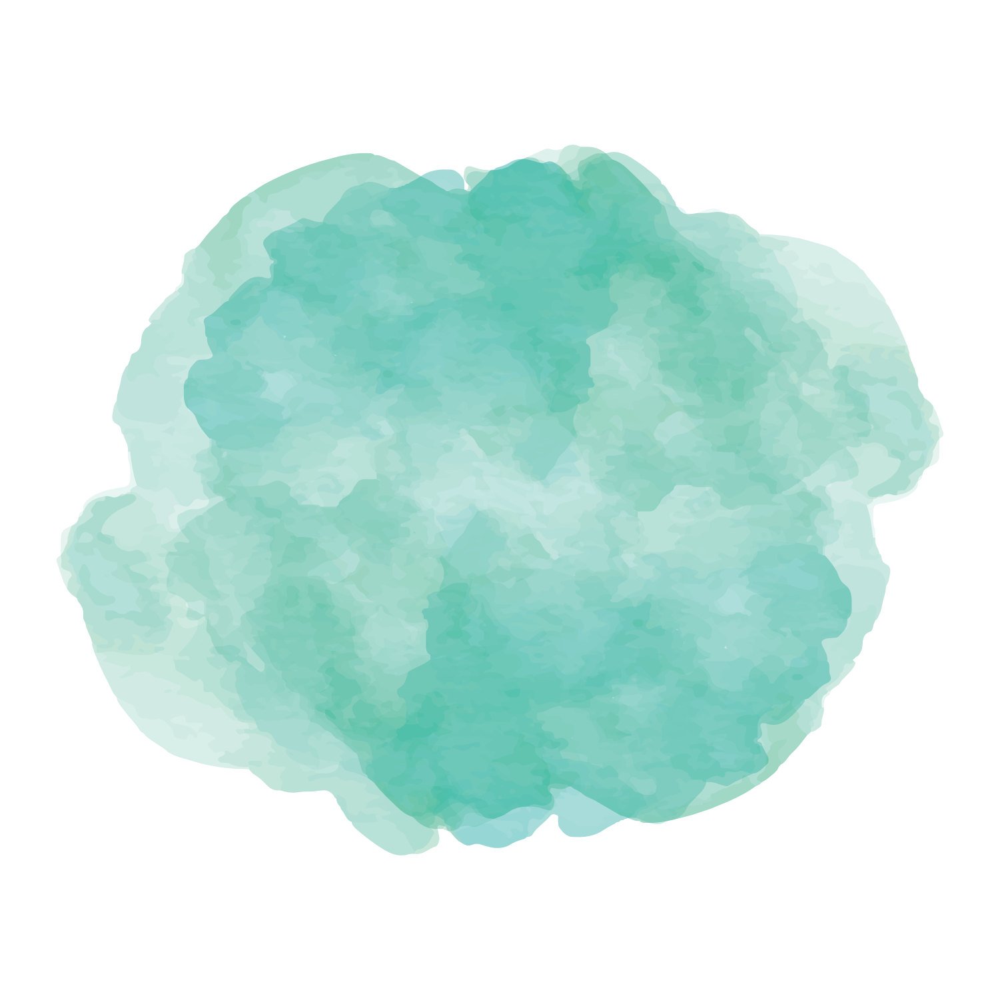
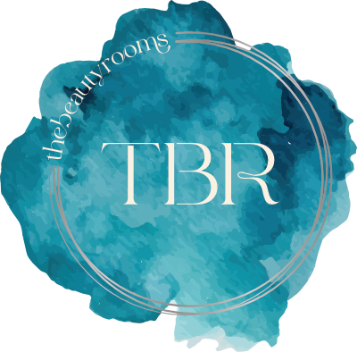

Brief
Sea-inspired, desaturated, sophisticated.




A single sea-led palette distilled from three directions — vibrant, clear and ready for production.
Atelier Lagoon — confirmed as the base direction following client review on 20 May 2026. The palette is built around Lagoon Light as the primary wash, supported by Tide Glass and Sea Mist across tonal registers, anchored by Ocean Deep as the dark.
Bright foil works as the metallic treatment, mainly in printed material.

The watercolour wash shifts with the season — not a different palette, a different temperature. The same five colours, reweighted.

Winter · Ocean wash Oct → MarApplication rules across print, digital, foil, and seasonal expressions.
| Context | Primary | Secondary | Avoid |
|---|---|---|---|
| Print collateral | Bone Sand ground · Lagoon wash | Tide Glass accents · Ocean Deep text | Sea Mist as background |
| Digital / social | Lagoon Light wash · Bone Sand | Ocean Deep text · Tide Glass borders | Full Lagoon block backgrounds |
| Foil / emboss | Silver PMS 8001 C | Blind deboss on Ocean Deep | Colour foil |
| Seasonal summer | Lagoon Light dominant | Tide Glass supporting | Ocean Deep wash |
| Seasonal winter | Ocean Deep dominant | Tide Glass supporting | Lagoon Light wash |
The client leans toward silver on the 3-ring border. We recommend specifying silver as a material, not a colour — the same Pantone struck in different finishes reads differently across surfaces. Each palette has a different default finish, summarised below.
The 3-ring border always retains the locked organic geometry — the silver only changes how the rings catch light.